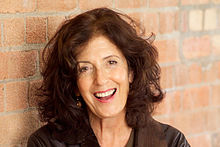

Dame Anita Lucia Roddick, DBE (23 October 1942 – 10 September 2007) was a British businesswoman, human rights activist and environmental campaigner, best known as the founder of The Body Shop, a cosmetics company producing and retailing natural beauty products that shaped ethical consumerism. The company was one of the first to prohibit the use of ingredients tested on animals and one of the first to promote fair trade with third world countries.
Roddick was involved in activism and campaigning for environmental and social issues, including involvement with Greenpeace and The Big Issue. In 1990, Roddick founded Children on the Edge, a charitable organisation which helps disadvantaged children in eastern Europe and Asia. She believed that business should offer a form of moral leadership, being a more powerful force in society than religion or government.
In 2003, Queen Elizabeth II appointed Roddick a Dame Commander of the Order of the British Empire.
In 2004, Roddick was diagnosed with liver cirrhosis due to long-standing hepatitis C. After she revealed this to the media in February 2007, she promoted the work of the Hepatitis C Trust, and campaigned to increase awareness of the disease.
Anita Roddick opened the first Body Shop in 1976 with the aim of making an income for herself and her two daughters while her husband was away in South America, with the idea of providing quality skin care products in refillable containers and sample sizes, all marketed with truth rather than hype.She opened her second shop six months later. On her husband's return, he joined the business. By 1991, the Body Shop had 700 branches, and Roddick was awarded the 1991 World Vision Award for Development Initiative.In 1993 she told Third Way Magazine:
| “ | The original Body Shop was a series of brilliant accidents. It had a great smell, it had a funky name. It was positioned between two funeral parlours—that always caused controversy. It was incredibly sensuous. It was 1976, the year of the heat wave, so there was a lot of flesh around. We knew about storytelling then, so all the products had stories. We recycled everything, not because we were environmentally friendly, but because we didn't have enough bottles. It was a good idea. What was unique about it, with no intent at all, no marketing nous, was that it translated across cultures, across geographical barriers and social structures. It wasn't a sophisticated plan, it just happened like that. | ” |
In 1997, Anita developed the Body Shop's most successful campaign ever, creating Ruby, the size 16 doll, who was thought to bear a passing resemblance to Barbie. The campaign evolved from a new strategic positioning developed by ethical communications consultancy Host Universal, who created the image of the naked red-haired doll, hands behind her head and wind in her hair, that became the embodiment of the campaign. The photographer was Steve Perry.
By 2004, the Body Shop had 1980 stores, serving over 77 million customers throughout the world. It was voted the second most trusted brand in the United Kingdom, and 28th top brand in the world.
On 17 March 2006, L'Oréal purchased Body Shop for £652 million. This caused controversy, because L'Oréal is involved in animal testing and because the company is part-owned by Nestlé, which has been criticised for its treatment of third world producers. Anita Roddick addressed it directly in an interview with The Guardian, which reported that "she sees herself as a kind of 'Trojan horse' who by selling her business to a huge firm will be able to influence the decisions it makes. Suppliers who had formerly worked with the Body Shop will in future have contracts with L'Oréal, and whilst working with the company 25 days a year Roddick was able to have an input into decisions."
Roddick was known for her campaigning work on environmental issues and was a member of the Demos think tank's advisory council. Children on the Edge (COTE) is an organisation that Roddick founded in 1990, in response to her visits to Romanian orphanages.
Upon seeing the conditions the children were in, she created COTE to help manage the crisis and worked to de-institutionalise the children over the course of their early life. COTE's mission is to help disadvantaged children affected by conflicts, natural disasters, disabilities, and HIV/AIDS.
On 13 December 2005, the National Post reported that Roddick had decided to turn her back on the world of commerce and give away her fortune, which came to £51 million ($104 million).
Roddick also wrote the book Take It Personally, which encourages equality and an end to the exploitation of workers and children in underdeveloped countries.
After her death her husband, Gordon Roddick, founded 38 Degrees in her memory, explaining, "I knew what would make Anita really laugh would be to cause a lot of trouble."
The Anita Roddick Foundation has given four grants totalling £120,000 to CAGE, a controversial organization aiming "to raise awareness of the plight of the prisoners at Guantánamo Bay and other detainees held as part of the War on Terror" . The organization has been described as "a front for Taliban enthusiasts and al Qaida devotees that fraudulently presents itself a human rights group", connected to Jihadi John and closely tied to Anwar al-Awlaki.
On 14 February 2007, Roddick revealed she had been diagnosed with hepatitis C. Roddick said, "I have hepatitis C. It's a bit of a bummer, but you groan and move on".On 30 August 2007, less than two weeks before her death, Roddick was a special guest in an episode of the live television programme Doctor, Doctor broadcast on Channel 5 in the UK, in which she talked about hepatitis C with the presenter and general practitioner, Mark Porter.
On live television, Roddick explained that her hepatitis C was unexpectedly diagnosed in 2004, following a blood test that was part of a medical examination needed for a life insurance policy; the blood test indicated abnormal liver function and subsequent blood tests diagnosed hepatitis C. Roddick explained that she had a large blood transfusion in 1971, after the birth of her younger daughter, and that she was convinced that the transfusion had infected her with hepatitis C. This was about twenty years before blood donors were screened for hepatitis C in the United Kingdom.
She reported that she had developed cirrhosis of the liver, and that her main symptoms were itching and poor concentration. She briefly mentioned that medical treatment with interferon did not suit her. Roddick explained that she kept fit and active, and that she attended biannual out-patient hospital appointments in Southampton, as well as being under review by the liver transplant team at the Addenbrooke's Hospital in Cambridge.
Roddick died of acute brain haemorrhage at about 6:30 p.m. on 10 September 2007, after being admitted to St Richard's Hospital, Chichester the previous evening suffering from a severe headache. She left her estate to charities, as promised.